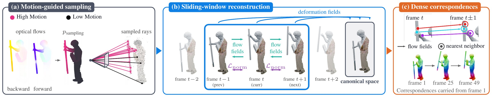

FlowSurf4D: Dynamic Surface Reconstruction with Dense Correspondence from Multi-View Video


The performer in this scene is our reconstruction of a real multi-view capture (TaoGS): the surface, the correspondences, the flow and the albedo used for relighting all come from FlowSurf4D. Sound can be switched on in the player.
Abstract
Applications such as texture editing and animation need deforming surfaces reconstructed from multi-view video to be accurate in every frame and in dense correspondence over time. Existing methods trade one for the other: reconstructing every frame independently gives the most accurate surfaces but no correspondences, and canonical-deformation methods relate the frames only implicitly, through deformations into a canonical space that are fit to each frame separately and need not agree, resulting in inaccurate correspondences. We present FlowSurf4D, which represents a deforming surface by a canonical signed distance field, deformation fields, and bidirectional 3D flow fields between adjacent frames that make the correspondences between frames explicit. The flow fields are supervised by optical flow and optimized jointly with the surfaces of adjacent frames in a sliding window. Chaining the flow fields yields dense correspondences between all frames, more accurate than those obtained through the canonical space of the same model. On ActorsHQ and DeformingThings4D, FlowSurf4D reconstructs the most accurate surfaces among dynamic methods on every scene, with the lowest temporal consistency error on DeformingThings4D, and is competitive with per-frame static methods. On DeformingThings4D, its correspondences have a 43% lower mean geodesic error than those that the next best dynamic method provides, whose surfaces are less accurate on every scene, and on real captures they agree best with 2D point tracks in held-out cameras.
Method

Motion is modeled by deformation fields that map each frame to the canonical space and, unlike previous canonical-deformation methods, by bidirectional flow fields between adjacent frames, which are optimized jointly in a sliding window. (a) Motion-guided ray sampling. (b) Flow fields between adjacent frames and deformation fields to the canonical space, in a sliding window. (c) Correspondences: vertices moved by the flow field (ring) and matched to the next mesh (dot).
Step by Step
A canonical signed distance field is fit to the multi-view images with a coarse-to-fine hash grid.
All steps are drawn from the checkpoints of a real run (TaoGS drawsword). The clips are narrated (switch the sound on) and play one after the other; pick a step to jump to it.
Results
Ours next to any other method over the whole sequence: geometry on all 16 DeformingThings4D and ActorsHQ scenes and the 6 TaoGS captures, correspondences on DeformingThings4D, and point tracks on TaoGS and ActorsHQ, and novel-view renderings on ActorsHQ and the humanoid DeformingThings4D scenes. Pick a tab, a scene and a method.
Ablations
Ground truth, our full model and the model without one component, same frame and camera, followed by a slider between the last two.
Applications
Texture Transfer
A new texture is painted on frame 1 only; our correspondences carry it to every later frame, and it stays on the surface while the subject moves.
Relighting
The albedo of frame 1 is carried to every frame by our correspondences and relit with warm, cool and moving lights.
Virtual Scenes
Our reconstructions of real captures placed in virtual scenes; the divider shows the geometry (left) and the appearance (right).
Quantitative Results
| Method | Corr. | ActorsHQ | DeformingThings4D | |||||
|---|---|---|---|---|---|---|---|---|
| CD↓ | NC↑ | F@1↑ | CD↓ | NC↑ | F@1↑ | TCE↓ | ||
| Dynamic, SDF-based | ||||||||
| Tensor4D† | (✓) | 8.32 | 0.884 | 0.831 | 16.38 | 0.863 | 0.662 | 6.65 |
| NeuS2 (dynamic) | ✗ | 4.05 | 0.915 | 0.959 | 10.82 | 0.907 | 0.803 | 5.05 |
| MoAngelo | (✓) | 3.62 | 0.916 | 0.962 | 9.51 | 0.878 | 0.782 | 5.13 |
| Dynamic, NeRF-based | ||||||||
| SceNeRFlow | (✓) | 16.45 | 0.705 | 0.530 | 37.12 | 0.583 | 0.303 | 18.98 |
| Dynamic, Gaussian-based | ||||||||
| Dynamic 3DGS | (✓) | 7.29 | 0.735 | 0.798 | 63.69 | 0.725 | 0.528 | 8.65 |
| Dynamic-2DGS† | (✓) | 26.83 | 0.641 | 0.405 | 23.94 | 0.714 | 0.559 | 14.39 |
| AT-GS | (✓) | 5.18 | 0.921 | 0.941 | 18.49 | 0.911 | 0.773 | 3.18 |
| 4DGS | (✓) | 10.65 | 0.696 | 0.652 | 19.57 | 0.709 | 0.486 | 12.98 |
| SC-GS | (✓) | 6.81 | 0.767 | 0.833 | 12.20 | 0.768 | 0.660 | 6.70 |
| Deformable 3DGS† | (✓) | 8.08 | 0.744 | 0.748 | 14.90 | 0.747 | 0.564 | 8.81 |
| Dynamic, mesh-based Gaussians | ||||||||
| GauSTAR | (✓) | 6.46 | 0.895 | 0.915 | 149.20 | 0.790 | 0.569 | 28.40 |
| DG-Mesh† | (✓) | 6.80 | 0.871 | 0.828 | 22.82 | 0.826 | 0.585 | 9.88 |
| MaGS† | ✓ | 15.06 | 0.725 | 0.481 | 26.65 | 0.696 | 0.307 | 10.26 |
| Per-frame static (no correspondences) | ||||||||
| NeuS2 (static) | ✗ | 4.12 | 0.897 | 0.949 | 10.30 | 0.901 | 0.803 | 4.77 |
| 2DGS | ✗ | 3.74 | 0.907 | 0.981 | 8.30 | 0.904 | 0.822 | 3.68 |
| PGSR | ✗ | 2.92 | 0.924 | 0.989 | 15.81 | 0.856 | 0.620 | 8.10 |
| Ours (Lite) | (✓) | 3.17 | 0.939 | 0.978 | 7.90 | 0.926 | 0.829 | 3.16 |
| Ours | ✓ | 3.12 | 0.940 | 0.980 | 7.62 | 0.930 | 0.834 | 2.87 |
Geometry on 6 ActorsHQ and 10 DeformingThings4D scenes (CD, TCE in mm). best, second, third among the dynamic methods. Corr.: ✓ direct, (✓) indirect, ✗ none. †Fewer scenes (the method failed on the others).
| Method | All↓ | Early↓ | Late↓ | AUC↑ |
|---|---|---|---|---|
| Tensor4D | 16.73 | 10.79 | 18.50 | 0.325 |
| SceNeRFlow | 17.28 | 5.86 | 20.68 | 0.337 |
| GauSTAR | 17.53 | 6.89 | 20.70 | 0.313 |
| Dynamic 3DGS | 7.26 | 3.48 | 8.38 | 0.622 |
| 4DGS | 17.84 | 7.79 | 20.83 | 0.335 |
| SC-GS | 7.56 | 2.76 | 8.98 | 0.632 |
| Deformable 3DGS† | 11.61 | 3.77 | 13.94 | 0.521 |
| Dynamic-2DGS† | 15.78 | 8.02 | 18.08 | 0.243 |
| DG-Mesh† | 15.20 | 5.93 | 17.96 | 0.422 |
| MaGS† | 11.32 | 3.71 | 13.59 | 0.530 |
| MoAngelo | 7.58 | 2.73 | 9.02 | 0.542 |
| Ours (Lite) | 5.48 | 2.39 | 6.40 | 0.622 |
| Ours, canonical route | 5.08 | 2.36 | 5.89 | 0.645 |
| Ours | 4.14 | 1.92 | 4.80 | 0.695 |
Correspondences on reconstructed surfaces (DeformingThings4D): geodesic error (×100) over the 50 frames (All), the first quarter of the sequence (Early) and the rest (Late). best, second, third. †Fewer scenes (the method failed on the others).
| Variant | ActorsHQ | DeformingThings4D | |||||||
|---|---|---|---|---|---|---|---|---|---|
| CD↓ | Acc.↓ | Compl.↓ | NC↑ | CD↓ | NC↑ | NAE↓ | TCE↓ | Corr.↓ | |
| Ours (full model) | 3.30 | 3.19 | 3.42 | 0.934 | 8.43 | 0.894 | 18.6 | 3.03 | 3.40 |
| − Lnorm | 3.29 | 3.23 | 3.36 | 0.933 | 8.45 | 0.884 | 19.8 | 3.25 | 3.42 |
| − Lflow | 3.47 | 3.27 | 3.68 | 0.930 | 8.78 | 0.890 | 19.2 | 3.34 | 8.69 |
| − flow fields | 3.27 | 3.19 | 3.35 | 0.933 | 8.42 | 0.886 | 19.6 | 3.33 | 7.69* |
| − motion-guided sampling | 3.48 | 3.23 | 3.72 | 0.932 | 9.56 | 0.889 | 19.7 | 4.74 | 3.19 |
| − ARAP, smoothness | 10.18 | 13.56 | 6.81 | 0.812 | 10.73 | 0.825 | 26.3 | 6.79 | 7.79 |
Ablations on three ActorsHQ and three DeformingThings4D scenes; each row removes one component (− flow fields also removes Lflow and Lnorm). best, second, third per column. *Through the canonical space.